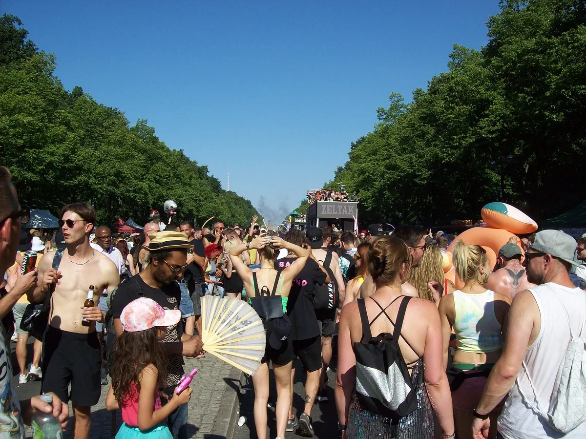

Rave history
Love Parade: history, Duisburg 2010 and Rave the Planet
The Berlin techno parade of 1989 to 2010, why it ended, and the parades that carry it on.
Three questions behind one name.
The Love Parade grew from about 150 people on a Berlin avenue in 1989 into an annual techno parade attended by over a million. It ended after the 2010 crowd crush in Duisburg, in which 21 people died. Searches for "loveparade" split three ways: people who want the history, people who want to know what happened in Duisburg, and people who think it might still be on.
What is the Love Parade meaning?
The Love Parade was a techno parade held in Germany from 1989 to 2010. It was registered as a political demonstration, and each year it carried a slogan. The first, in 1989, was "Peace, Joy, Pancakes". The German spelling, Loveparade, is one word, and both spellings refer to the same event.
It was a procession of decorated trucks, called floats, with DJs playing from the back and the crowd dancing alongside, so it was never a club night or a single festival stage.
How did the Love Parade begin in 1989?
The Love Parade started on 1 July 1989 on the Kurfürstendamm in West Berlin. According to the Federal Agency for Civic Education (bpb), it was founded by the DJ Matthias Roeingh, known as Dr. Motte, and the artist Danielle de Picciotto. About 150 people took part.
The Love Parade 1989 edition was tiny next to what followed. The bpb gives these attendance figures for the early years, all organiser estimates: 2,000 in 1990, 6,000 in 1991, 15,000 in 1992, 30,000 in 1993, 120,000 in 1994 and 300,000 in 1995.
How big did the Love Parade get in Berlin?
The parade moved to the Straße des 17. Juni, the avenue through the Tiergarten park, in 1996. The organisers' history page and the bpb both give that year. The bpb figures for the Berlin peak are 750,000 in 1996, over a million in 1997 and 1.5 million in 1999, the year of the slogan "Music Is The Key". These are organiser estimates, and open-air crowd counts are rarely checked independently.
In 2001 the Love Parade lost its official status as a demonstration. The parade was cancelled in 2004 and 2005, the brand was sold in November 2005, and from 2006 McFit was the main sponsor.

Where was the Love Parade held after Berlin?
For Love Parade Germany after Berlin means the Ruhr, the industrial region in the west, where the bpb says the parade moved from 2007. Love Parade Essen took place in 2007, followed by Love Parade Dortmund in 2008. A Bochum edition planned for 2009 was cancelled.
The last Love Parade festival was set for Duisburg on 24 July 2010. Its organiser was Rainer Schaller of the McFit gym chain.
What happened at the Loveparade Duisburg 2010?
On 24 July 2010, 21 people died and 652 were injured at the Loveparade Duisburg 2010 site, according to DW, which reported that the dead came from six countries. About 200,000 people attended, and a tunnel was the only way in and out.
Ten people were charged. The criminal trial opened in 2017 and ended in May 2020 without a verdict. Duisburg marks each 24 July with a commemoration. This page does not describe the crush further, and DW's anniversary reporting is the place to read the account.
Why was Love Parade cancelled?
There are two answers, years apart. The Love Parade lost its demonstration status in 2001 and was cancelled in 2004 and 2005, then revived under new ownership. The final end came after Duisburg: on 25 July 2010, Rainer Schaller said "It's all over for the Love Parade."
Is the Love Parade still happening?
No. The Love Parade ended in 2010, and its organiser said it would not take place again. Rave the Planet is a separate organisation that holds a parade in Berlin. A Love Parade 2027 does not exist either. Rave the Planet plans its next parade for Saturday 10 July 2027, subject to final confirmation, and the Street Parade in Zurich is on 14 August 2027.
What is Rave the Planet?
Rave the Planet Berlin is the parade that carries on the Love Parade's idea. The organisers' history page dates the relaunch to 13 January 2020, and the first parade took place on 9 July 2022. The Rave the Planet parade describes itself as a cultural and political demonstration, as the Love Parade did.
| Year | Date | Slogan | Floats | Organiser estimate |
|---|---|---|---|---|
| 2022 | 9 July | Together Again | 18 | about 300,000 |
| 2023 | 8 July | Music Is The Answer | 25 | about 300,000 |
| 2024 | 17 August | Love Is Stronger | 30 | about 380,000 |
| 2025 | 12 July | Our Future Is Now | 35 | over 200,000 |
| 2026 | 15 August | Imagine Love | 34 | at least about 400,000 over the day |
Rave the Planet 2026 was first set for 1 August. It moved to 15 August after clashes with Nature One and Hamburg's Christopher Street Day. The organisers estimate about 250,000 people at the peak, with more than 300 artists on the floats.
Berlin techno itself has a cultural listing. It was entered in Germany's national inventory of intangible cultural heritage on 13 March 2024, and the certificate was presented on 22 October 2024 at Biebrich Palace in Wiesbaden. That is a national listing from the German UNESCO Commission, and Berlin techno is not on the UNESCO World Heritage list. For the clubs, see the best clubs in Berlin and the Berghain guide.
What is the Street Parade in Zurich?
The Street Parade Zurich started on 5 September 1992. According to its own history page, it was founded by Marek Krynski, and about 1,000 people came. It had seven Love Mobiles, the parade's name for its floats, and only one worked properly.
The Street Parade drew about 900,000 people in 2025, according to its organisers. The 2026 parade was on 8 August, and the next is on 14 August 2027.
Which Berlin sets should you hear first?
These are Berlin recordings, not Love Parade appearances: Sven Väth for Boiler Room Berlin, DJ Hell for Boiler Room Berlin and Ellen Allien for HÖR Berlin.
For the music behind the parade, see the German electronic music guide and the techno guide. To hear a DJ set you have not chosen, the Selector plays one at random.
Plan your Rave The Planet trip.
The original Love Parade no longer operates. Its Berlin successor Rave The Planet is a free demonstration, currently planned for 10 July 2027; wait for the final route and safety notice.
Budget the whole weekend.
Use current official prices only. A status of “not published” means the organiser has not released a valid 2027 price.
| Ticket option | Price |
|---|---|
| Parade admissionPublic demonstration | Free |
| Official afterpartySeparate indoor event if announced | Separate ticket |
| Public transportNormal or special Berlin service | Local fare rules |
Booking fees, transport, accommodation and optional upgrades may be separate.
Choose your route.
S-Bahn or U-Bahn to the announced route edge
Berlin event pageUse a station outside the densest part of Straße des 17. Juni, then walk. Final closures determine the best stop.
Regional train to Berlin Hauptbahnhof, then walk
Berlin Hauptbahnhof on Google MapsThe station is north of the Tiergarten route and avoids a road transfer. Check crowd-control exits on the day.
Return by a station away from the Victory Column
Straße des 17. Juni on Google MapsChoose a meeting point and two return stations before entering the crowd because mobile service may be congested.
Recheck the final timetable and pick-up point shortly before travel.
Where you sleep.
There is no parade campsite. Stay near an S-Bahn or U-Bahn line and avoid assuming the afterparty, if announced, will be close to the daytime route.
Travel and FAQFood and drink.
The parade is free and has no single festival bar menu. Budget city food, water, public transport and any separately ticketed official afterparty.
- Festival food and drink menu
- Not published
- Water
- Check current event rules
- Payment
- Check current event rules
Pack for the site, not the forecast.
- Water, sun protection and a light rain layer
- Earplugs and comfortable shoes
- Charged phone and offline meeting point
- Small bag kept close in the crowd
- Public-transport route for the return
Leave at home or recheck.
- Glass and bulky luggage
- Weapons, fireworks and drones
- Blocking emergency lanes
- Depending on mobile service in the crowd
- Treating an announced route as final before the event map
The 10 July 2027 date is planned, while Berlin authorities still control final approval, route and safety measures. Recheck the official event page before travel.
Love Parade FAQ.
Why was Love Parade cancelled?
It was cancelled in 2004 and 2005 after losing its demonstration status, and it ended for good after the Duisburg crowd crush on 24 July 2010, in which 21 people died. On 25 July 2010 the organiser Rainer Schaller declared it over.
Love Parade 2026: is it coming back?
There is no Love Parade Berlin 2026 edition. The organiser said it would not take place again. The Berlin parade that carries on the idea is Rave the Planet, held on 15 August 2026, with the next planned for Saturday 10 July 2027, subject to confirmation.
Is the Love Parade still happening?
Not under that name. The last one was in Duisburg in 2010. Rave the Planet in Berlin and the Street Parade in Zurich are the parades that still run.
What was the first Love Parade?
It was held on 1 July 1989 on the Kurfürstendamm in West Berlin, with about 150 people. The founders were Dr. Motte and Danielle de Picciotto.
How many people died at the Love Parade in Duisburg?
21 people died on 24 July 2010, and 652 were injured, according to DW. The criminal trial ended in May 2020 without a verdict.
Is Rave the Planet the same as the Love Parade?
No. Rave the Planet is a separate organisation that holds a parade in Berlin. The Love Parade brand ended in 2010.
Sources.
- Founding, 1989 to 1999 attendance, the 1996 move and the 2001 to 2010 timeline, read on 5 October 2026: Federal Agency for Civic Education (bpb) and Rave the Planet history.
- Duisburg 2010 casualties and the trial: DW. The organiser's statement of 25 July 2010: Resident Advisor.
- Rave the Planet 2026 and the next date: 2026 press release. Cultural heritage listing: certificate page.
- Street Parade history and dates: streetparade.com/en/historie and streetparade.com.
- Photograph: Wikimedia Commons.
Continue reading
Read next.
 Music history~11 min read
Music history~11 min readGerman Electronic Music History: From Kraftwerk to Techno
Cologne studios, Düsseldorf electronic pop, Frankfurt trance and the Detroit-Berlin alliance.
Read article → Rave spots~10 min read
Rave spots~10 min readBest Clubs in Berlin: The Legends and the Ones Still Open
The rooms that made Berlin a techno city, the famous clubs that closed, and the best clubs in Berlin that are still open.
Read article → Rave spots~8 min read
Rave spots~8 min readBerghain: Panorama Bar, Sound and Residents
Berghain explained: the former power station, Panorama Bar upstairs, Halle am Berghain, the Kantine, and the Ostgut Ton label.
Read article → Rave spots~6 min read
Rave spots~6 min readBest Clubs in Paris: From Le Palace to Rex Club
Le Palace, Les Bains Douches and Rex Club: the clubs that made Paris nightlife, how each became famous, and the best clubs in Paris open now.
Read article →